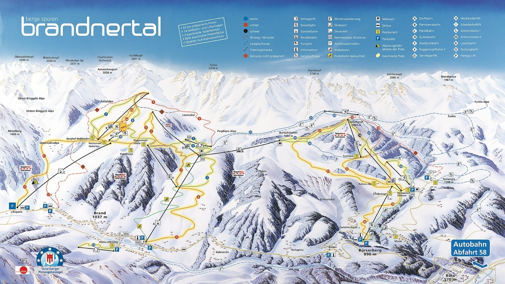

Snowboarden
Snowboarden is een activiteit die ik al meer dan 5 jaar doe. Vroeger toen ik klein was deed ik vooral veel skateboarden en dit heeft geleid naar het snowboarden. Mijn vader snowboard al 15 jaar en heeft mij ermee aangestoken toen ik nog wat jonger was. Ik ben ook van plan om in de toekomst een snowboard te gaan kopen en zeker ieder jaar op winter sport te gaan.
Mijn favoriete plek om te gaan snowboarden is in Oostenrijk, maar dit is vooral omdat er vrienden van mij wonen waardoor ik voor weinig kan verblijven. Het enige nadeel van op wintersport gaan is de prijs. Als je op wintersport gaat zit je waarschijnelijk in het hoog seizoen en rond deze tijd zijn de prijzen van een ski-pas door het dak heen.
Hier onder nog een filmpje van mij in Snowworld Zoetermeer.